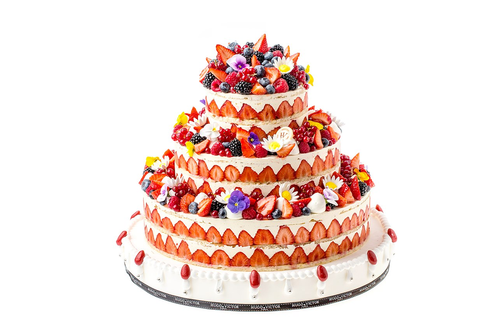
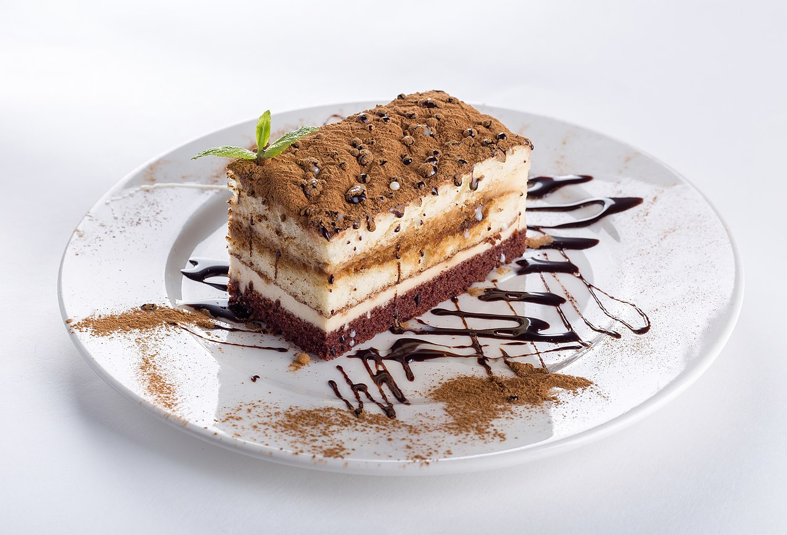

Cakes
From Simple English Wikipedia, the free encyclopedia
A cake is a type of (usually) sweet dessert
which is baked.
Originally, it was a bread-like food, but no longer.
Cakes are often made to celebrate special occasions like birthdays or weddings.
There are many kinds of cakes. It can be baked in an oven.
Some savory cakes are made on a griddle or a frying pan.

A wedding cake

A chocolate cake
Construction
Cakes are baked from a
batter.
Batter is made by mixing wet ingredients (like
milk and
eggs) with dry ingredients (like sugar and flour).
The batter is baked in an oven. This way of baking is known as the
muffin method, because
muffins are made this way.
Vegan versions of the same cake abstain from using
animal products such as
dairy or
eggs and instead substitute them
with plant derived products such as nut milk and alginate-lecithin gel.
[ 1 ]
Just like
bread, cakes rise in the oven because they
contain many small air
bubbles.
As cakes rise, the air bubbles expand.
This is why the cake batter expands in the pan (often to twice its original size).
There are two ways of forming the air bubbles, which create different types of cakes.
Almost every kind of cake belongs to one of these families.
Creamed Fat
These cakes are made with
butter or another
fat, like vegetable shortening.
The common way is to mix the fat and sugar, then add eggs, and then add flour.
The fat should be soft.
It should not be hard or liquid.
Mixing
sugar with fat creates many very small air bubbles.
Most
birthday cakes are made this way. Cupcakes are
also made this way.
Egg Foam
These cakes are not made with solid butter or vegetable shortening.
Some of these cakes are made with melted butter or vegetable oil.
The common way is to mix the eggs and sugar, and then add flour.
These cakes are often much taller, lighter and often
spongier than creamed fat cakes.
Angelfood cake and
chiffon cakes are egg foam cakes. Most grocery stores with
bakeries sell angelfood cakes.
Angelfood cakes are made by beating egg whites with sugar.
This traps a lot of tiny air bubbles.
The eggs and sugar are mixed with other ingredients.
Then, the cake is baked.

A three-pound homestyle birthday by someone's birthday
Decorations
A cake can be decorated with
icing (also called
"frosting"), chocolate,
fruit, and much more.
A layer cake is made by stacking cakes with icing or filling between the layers.
Birthday cakes are sometimes decorated with
candles.
Cakes can be served with
berries or other kinds of
fruit.
A large, rich cake is often called by the
French
word for "cake": "gâteau" (plural: "gâteaux", both singular and plural pronounced "GA-toe").
[2][3]
It may have a lot of
cream.
Some cakes can have edible paper on the top.
Gallery
 Black Forest cake
Black Forest cake
 Modern style wedding cake
Modern style wedding cake
 Pandan Cake
Pandan Cake
 Angel Food Cake
Angel Food Cake
 Matcha tarimisu cake
Matcha tarimisu cake
 Chocolate cake
Chocolate cake
.jpg) Rainbow coloured cake
Rainbow coloured cake
 Honey Cake
Honey Cake
 Greek sponge cake
Greek sponge cake
 Homemade Mother's Day Cake
Homemade Mother's Day Cake
References
- ↑ Salwa, M. "PHYSICAL, CHEMICAL AND SENSORY CHARACTERISTICS OF VEGAN CAKE." Arab Universities Journal of Agricultural Sciences 17.2 (2009): 335-350.
- ↑Olver, Lynne. "About cake". foodtimeline.org. Retrieved 19 February 2016.
- ↑Goldstein, Darra (2015). The Oxford Companion to Sugar and Sweets. Oxford University Press. p. 92. ISBN 978-0-19-931339-6.
.jpg)